건축기사 (2007-03-04 기출문제)
1과목: 건축계획
1. 학교 교사의 배치계획 중 폐쇄형에 대한 설명으로 옳지 않은 것은?
- 화재 및 비상시에 불리하다.
- 일조ㆍ통풍 등 환경조건이 불균등하다.
- 일종의 핑거 플랜으로 구조계획이 간단하다.
- 교사 주변에 활용되지 않은 부분이 많은 결점이 있다.
(정답률: 81%)

2. 주거단지계획시 보행자를 위한 공간계획에 관한 설명 중 옳지 않은 것은?
- 보행자가 차도를 걷거나 횡단하는 것이 용이하지 않도록 한다.
- 보행로에 흥미를 부여하여 질감, 밀도, 조경 및 스케일에 변화를 준다.
- 광장 등을 보행자 공간에 포함시켜 다양성을 높인다.
- 커뮤니티의 중심부에는 유보로(promenade)를 설치하면 안된다.
(정답률: 65%)
3. 다음 중 건축가와 작품의 연결이 옳지 않은 것은?
- 월터 그로피우스(Walter Gropius)-아테네 미국대사관
- 프랭크 로이드 라이트(Ftank Lloyd Wright)-구겐하임미술관
- 르 꼬르뷔지에(Le Corbusier)-론샹의 교회당
- 미스 반 데르 로에(Mies Van der Rohe)-M.I.T 공대기숙사
(정답률: 54%)
4. 사무소 건축의 코어 형식 중 편심코어에 대한 설명으로 옳지 않은 것은?
- 바닥면적이 커지면 코너 이외의 피난시설 등이 필요해진다.
- 고층인 경우 구조상 불리할 수 있다.
- 일반적으로 바닥면적이 별로 크지 않을 경우에 많이 사용된다.
- 내진구조상 유리하며 구조코어로서 가장 바람직한 형식이다.
(정답률: 77%)
5. 학교운영방식 중 교과교실형에 대한 설명으로 옳지 않은 것은?
- 학생들의 이동이 심하다.
- 일반교실이 없다.
- 초등학교 저학년에 대해 가장 권장되는 형식이다.
- 시설의 정도가 높다.
(정답률: 81%)
6. 다음 중 상점 정면(facade)구성에 요구되는 상점과 관련되는 5가지 광고요소(AIDMA 법칙)속하지 않는 것은?
- Attention(주의)
- Interest(흥미)
- Design(디자인)
- Memory(기억)
(정답률: 61%)
7. 다음 중 주택에서 옥내와 옥외를 연결시키는 완층적인 공간이 아닌 것은?
- 테라스
- 서비스야드
- 유틸리티
- 다이닝포오치
(정답률: 67%)
8. 다음 중 의사 및 간호사의 수술부에서의 동선으로 가장 적합한 것은?
- 급한 환자일 경우 별도의 실을 경유하지 않고 수술실로 직접간다.
- 세면실만을 거쳐 수술실로 간다.
- 갱의실에서 세면실을 거쳐 수술실로 간다.
- 갱의실, 세면실, 마취실을 차례로 거쳐 수술실로 간다.
(정답률: 68%)
9. 다음 중 미술관 전시실의 조명 및 채광계획에 관한 설명으로 옳지 않은 것은?
- 인공조명을 주로 하고 자연채광은 전혀 고려하지 아니한다.
- 광원이 현휘를 주지 않도록 한다.
- 관객의 그림자가 전시물상에 나타나지 않도록 한다.
- 광색이 적당하고 변화가 없게 한다.
(정답률: 75%)
10. 도서관 출입구의 배치에 대한 설명 중 옳지 않은 것은?
- 출입구의 배치장소에 따라 건물 내부의 공간배치가 좌우된다.
- 이용자측과 직원, 자료의 출입구를 가능한 한 별도로 계획하는 것이 바람직하다.
- 대지조건과 도서관의 내부기능의 관계를 충분히 검토하여 결정해야 한다.
- 집회공강의 출입구는 이용자 출입구와 공용으로 하는 것이 바람직하다.
(정답률: 71%)
11. 다음 중 일반 임대사무소 건축에 있어서 임대면적과 연면적의 비(임대면적/연면적)로 가장 적절한 것은?
- 10%
- 25%
- 50%
- 75%
(정답률: 63%)
12. 다음 중 고딕건축과 가장 관계가 먼 것은?
- 첨두아치(Pointed Arch)
- 장미창(Rose Window)
- 첨탑(Spire)
- 펜덴티브(Pendentive)
(정답률: 71%)
13. 학교 건축계획시 고려되는 융통성의 해결 수단과 가장 관계가 먼 것은?
- 방 사이 벽(partition)의 이동
- 각 교실의 특수화
- 교실배치의 융통성
- 공간의 다목적성
(정답률: 63%)
14. 다음 중 사무소 건축에서 기준충의 평면을 한정하는 사항과 가장 관계가 먼 것은?
- 사무실 내의 작업 능률
- 구조상 스팬의 한도
- 덕트, 배선, 배관 등 설비시스템상의 한계
- 동선상의 거리
(정답률: 66%)
15. 다음 중 부엌의 작업순위에 따라 설치되는 설비기기의 순서로 가장 적당한 것은?
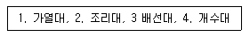
- 2-4-1-3
- 4-2-1-3
- 2-4-3-1
- 4-2-3-1
(정답률: 63%)
16. 다음 중 아파트의 평면 형식에 따른 분류에 속하지 않는 것은?
- 홀형
- 복도형
- 집중형
- 탑상형
(정답률: 76%)
17. 극장의 음향계획에 관한 설명으로 옳지 않은 것은?
- 잔향을 조절하기 위해 무대앞, 전면주의 벽에는 흡음재를, 객석 및 뒷벽에는 반사재를 사용한다.
- 객석의 평면이 원형이나 타원형일 경우 잔향을 일으킬 우려가 있다.
- 객설부 공간이 앞면 경사천장은 객석 뒤쪽에 도달하는 음을 보강하도록 계획한다.
- 천장과 측벽은 음원으로부터의 음이 특히 멀리 앉은 관객에게 보강이 되어 잘 들리도록 경사면이 적절히 설계되어야 한다.
(정답률: 72%)
18. 다음의 병원건축계획에 관한 기술 중 가장 부적당한 것은?
- 1개의 간호사 대기소에서 관리할 수 있는 병상수는 30~40개 이하로 한다.
- 병실 출입구는 침대가 통과할 수 있는 폭이어야 한다.
- 간호단위의 구성시 간호사의 보행거리는 24m 이내가 되도록 한다.
- 병원의 화자용 계단에 대체하여 설치하는 경사로의 경사는 최대 1/6 이하로 한다.
(정답률: 54%)
19. 전시실의 순회형식 중 많은 실을 순서별로 통하여야 하는 불편이 있어 대규모의 미술관 계획에 있어서 바람직하지 않은 것은?
- 연속순로 형식
- 갤러리 형식
- 중앙홀 형식
- 복도 형식
(정답률: 83%)
20. 다음 중 캐빈 린치(Kevin Lynch)가 주장한 “도시 이미지”의 구성요소가 아닌 것은?
- Paths
- Edges
- Linkages
- Landmarks
(정답률: 69%)
2과목: 건축시공
21. 보통 콘크리트 공사에서 콘크리트에 포한된 염화물량의 기준은 염소이온량으로서 얼마 이하가 되어야 하는가?
- 0.10kg/m3
- 0.20kg/m3
- 0.30kg/m3
- 0.40kg/m3
(정답률: 76%)
22. 다음 중 토공사를 할 경우 주의해야 할 현상으로 가장 거리가 먼 것은?
- 파이핑(piping)
- 보일링(boiling)
- 히이빙(heaving)
- 그라우팅(grouting)
(정답률: 80%)
23. 문윗틀과 문짝에 설치하여 문이 자동적으로 닫혀지게 하는 장치로서 도어 클로우저(door closer)라고 불리우는 것은?
- 피봇 힌지(pivot hinge)
- 함자물쇠
- 체인룩
- 도어 체크(door check)
(정답률: 86%)
24. 등분포하중을 받는 T형보의 콘크리트 이어붓기의 위치로서 가장 적당한 위치는 어느 것인가? (단, L은 스팬의 길이이다.)
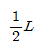
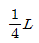
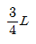
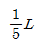
(정답률: 50%)
25. 공정표를 작성할 때의 주의사항 중 틀린 것은?
- 공정표에는 공사수량도 기입한다.
- 공정표에는 재료의 발주시기를 명기(明記)한다.
- 한 공사가 완전히 끝난 며칠 후 다음 공사가 시작하도록 작성한다.
- 기초공사는 공정의 변동 가능성이 많으므로 충분한 여유를 둔다.
(정답률: 71%)
26. 공동도급방식(Joint Venture)에 대한 설명으로 옳은 것은?
- 2명 이상의 수급자가 어느 측정공사에 대하여 협동으로 공사를 체결하는 방식이다.
- 발주자, 설계자, 공사관리자의 세 전문집단에 의하여 공사를 수행하는 방식이다.
- 발주자와 수급자가 상호신뢰를 바탕으로 팀을 구성하여 공동으로 공사를 수행하는 방식이다.
- 공사수행방식에 따라 설계/시공(D/B)방식과 설계/관리(D/M)방식으로 구분한다.
(정답률: 76%)
27. 셀프레벨링재 바름에 대한 설명으로 옳지 않은 것은?
- 재료는 대부분 기재합 상태로 이용되며, 석고계 재료는 물이 닿지 않는 실내에서만 사용한다.
- 모든 재료의 보관은 밀봉상태로 건조시켜 보관해야하며, 직사광선이 닿지 않도록 한다.
- 경화후 이어치기 부분의 돌출 및 기포 흔적이 남아 잇는 주변의 튀어나온 부위는 연마기로 갈아서 평탄하게 하고, 도목하게 들어간 부분 등은 된비빔 셀프레벨링재를 이용하여 보수한다.
- 셀프레벨링재의 표면에 물결무늬가 생기지 않도록 창문등을 밀폐하여 통풍기 기류를 차단하고, 시공중이나 시공완료 후 기온이 10 ℃이하가 되지 않도록 한다.
(정답률: 41%)
28. 거푸집 측압에 영향을 주는 요인에 관한 설명 중 틀린 것은?
- 콘크리트 타설 속도가 빠를수록 측압이 크다.
- 묽은 콘크리트 일수록 측압이 크다.
- 철근량이 많을수록 측압이 크다.
- 단면이 클수록 측압이 크다.
(정답률: 60%)
29. 다음 중 프리텐션방식에 속하지 않는 공법은?
- 롱라인 공법
- 매그널 공법
- 단독형틀공법
- 정착프리텐션공법
(정답률: 37%)
30. 벽두께 1.5B, 벽 면적 20m2 쌓기에 소요되는 표준형 벽돌의 정미량은? (단, 줄눈은 10mm로 한다.)
- 2.240매
- 3,360매
- 4,480매
- 6,720매
(정답률: 72%)
31. 목조, 철골조등의벽, 천장에 모르타르 바탕이 되어 부착이 잘되게 하며 미장재의 균열을 방지할 수 있는 금속재료로서 적당하지 않은 것은?
- 메탈라스
- 와이어라스
- 익스팬디드메탈
- 펀칭메탈
(정답률: 53%)
32. 웰포인트(Well point)공법에 관한 설명 중에서 틀린 것은?
- 흙막이의 토압이 줄어든다.
- 웰포인트는 비교적 지하 수위가 얕은 모래지반의 배수에 유리하다.
- 인접지반에 침하를 발생시키기 쉽다.
- 모래지반보다 점토질 지반에서 탈수효과가 크다.
(정답률: 68%)
33. 타일의 흡수율 크기의 대소관계가 알맞은 것은?
- 석기질 > 도기질 > 자기질
- 도기질 > 석기질 > 자기질
- 자기질 > 석기질 > 도기질
- 석기질 > 자기질 > 도기질
(정답률: 52%)
34. 다음 중 벽돌벽의 균열 원인이 아닌 것은?
- 기초의 부동침하
- 건물 벽면의 불합리한 배치
- 벽돌 강도보다 강한 모르타르 사용
- 이질재와 접합
(정답률: 72%)
35. 설계도에서 정미량으로 산출한 D10 철근량은 2,870kg이다. 할증을 고려한 소요량으로서 8m 짜리 철근 몇개를 운반하여야 하는가?
- 650개
- 660개
- 673개
- 681개
(정답률: 48%)
36. 건축 방수공사의 성능확인을 위한 가장 일반적인 시험 방법은?
- 수밀시험
- 기밀시험
- 실물시험
- 담수시험
(정답률: 73%)
37. 다음 중 건축공사의 직접공사비 원가로 바르게 구성된 것은?
- 자재비, 노무비, 장비비, 간접비
- 자재비, 노무비, 장비비, 경비
- 자재비, 노무비, 외주비, 경비
- 자재비, 노무비, 외주비, 간접비
(정답률: 58%)
38. 최근에는 바닥 마감재의 시공성 확보 및 일체성을 위해 플라스틱 바름 바닥재의 사용이 많아지고 있다. 다음의 플라스틱 바름 바닥재에 대한 설명으로 옳지 않은 것은?
- 폴리우레탄 바름 바닥재 - 공기중의 수분과 화학 반응하는 경우 저온과 저습에서 경화가 늦으므로 5℃이하에서는 촉진제를 사용한다.
- 에폭시수지 바름 바닥재 - 수지 페이스트와 수지모르타르용 결합재에 경화제를 혼합하면 생기는 기포의 혼입을 막도록 소포제를 첨가한다.
- 불포화폴리에스테르 바름 바닥재- 표면강도(탄력성) 신축성 등이 폴리우레탄에 가까운 연질이고 페이스트, 모르타르, 골재 등을 섞어서 사용한다.
- 프란수지 바름 바닥재 - 탄력성과 미끄럼 방지에 유리하여 체육관에 많이 사용한다.
(정답률: 55%)
39. MCX(Minimum Cost Expediting)기법에 의한 공기 단축 방법에 관한 설명 중 옳지 않은 것은?
- 주공정선(Critical Path) 이외의 작업을 단축한다.
- 비용구배가 최소인 작업부터 단축한다.
- 단축가능한계까지 단축한다.
- 보조 주공정선(Sub-Critical Path)의 발생을 확인한다.
(정답률: 46%)
40. 파이프 회전봉의 선단에 커터를 장치한 것으로 지중을 파고 다시 회전시켜 빼내면서 모르타르를 분출시켜 지중에 소일 콘크리트 파일을 형성시킨 말뚝은
- T.L.P파일
- C.I.P파일
- M.I.P파일
- P.I.P파일
(정답률: 44%)
3과목: 건축구조
41. 신축 건물의 기초파기 중 토질에 생기는 현상과 가장 관계가 먼 것은?
- 보일링(boiling)
- 파이핑(piping)
- 히이빙(heaving)
- 언더피닝(under pinning)
(정답률: 68%)
42. 강구조 기둥의 주각에 관한 설명 중 틀린 것은?
- 기둥의 응력이 크면 윙플레이크, 접합앵글, 리브등으로 보강하여 응력의 분산을 도모한다.
- 앵커볼트는 기초콘크리트에 매입되어 주각부의 이동을 방지하는 역할을 한다.
- 주각은 고정으로만 가정하여 응력을 산정한다.
- 축방향력이나 휨모멘트는 베이스플레이트 지면의 압축력이나 앵커볼트의 인장력에 의해 전달된다.
(정답률: 56%)
43. 다음과 같은 조건의 1방향 슬래브에서 처짐을 계산 하지 않고 정할 수 있는 슬래브의 최소 두께는?
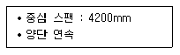
- 150mm
- 180mm
- 200mm
- 220mm
(정답률: 44%)
44. 그림에서 B점의 반력(RB) 값은?
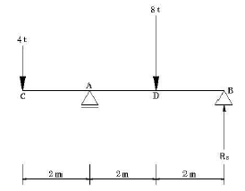
- 0t
- 2t
- 4t
- 6t
(정답률: 48%)
45. 다음과 같은 사다리꼴 다면의 도심 y0 값은?
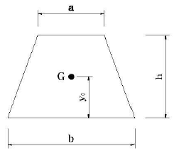
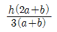
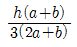
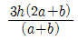
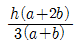
(정답률: 58%)
46. 그림과 같은 철근콘크리트 직사각형보의 설계강도는? (단, fck=21MPa, fy=400MPa, 강도감소계수 ∅=0.90, D22의 단면적 A=387mm2)
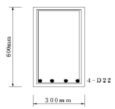
- 297.2kNㆍm
- 330.2kNㆍm
- 302.1kNㆍm
- 335.7kNㆍm
(정답률: 23%)
47. 그림과 같은 보의 최대 휨모멘트 값은?
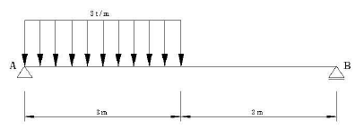
- 약 2.5 tㆍm
- 약 3.3 tㆍm
- 약 4.8 tㆍm
- 약 7.6 tㆍm
(정답률: 38%)
48. 강도설계법에서 직접설계법을 적용한 내부 경간 슬래브 설계시 계수 모멘트 Mo=25×104Nㆍm일 경우, 양단 연속된 슬래브에서 단×부와 중앙부의 계수모멘트는?
- 단부 : 16.25×104Nㆍm, 중앙부 : 8.75×104Nㆍm
- 단부 : 15.0×104Nㆍm, 중앙부 : 10.0×104Nㆍm
- 단부 : 13.75×104Nㆍm, 중앙부 : 11.25×104Nㆍm
- 단부 : 12.5×104Nㆍm, 중앙부 : 12.5×104Nㆍm
(정답률: 34%)
49. 그림과 같은 기둥에서 띠철근의 수직간격은 최데 얼마 이하로 하여야 하는가? (단, 주근은 4-D22, 띠철근은 D13)
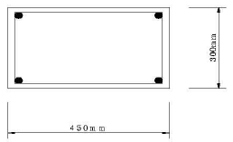
- 220mm
- 300mm
- 352mm
- 624mm
(정답률: 48%)
50. 그림과 같은 구조물의 판별로 옳은 것은?
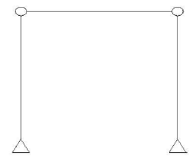
- 불안정
- 정정
- 1차 부정정
- 2차 부정정
(정답률: 58%)
51. 다음의 내민보에서 등분포 하중이 작용할 때, 2개의 지점과 보의 중앙점에서 절대 최대 휨모멘트의 값이 같은 경우 L의 길이는?
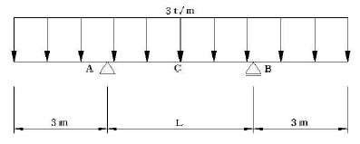
- 12.73cm
- 8.49cm
- 4.24cm
- 2.12cm
(정답률: 36%)
52. 다음 구조물의 a, b점에서의 휨모멘트는?
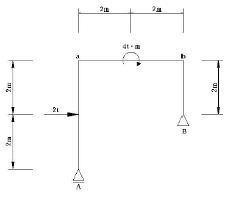
- a=2tㆍm, b=4tㆍm
- a=4tㆍm, b=2tㆍm
- a=2tㆍm, b=2tㆍm
- a=4tㆍm, b=4tㆍm
(정답률: 28%)
53. 다음 중 철골보의 휨내력이 부족시 보완대책으로 가장 알맞은 것은?
- 플랜지를 커버플레이트로 보강한다.
- 접합부분에 고력볼트의 개수를 증가시킨다.
- 시어 커넥터를 사용한다.
- 저합부의 용접두께를 크게 한다.
(정답률: 54%)
54. 조립식 건축구조에 과한 서령 중 옳지 않은 것은?
- 건축의 생산성을 향상시킬 수 있다.
- 현장에서 모든 구조물을 조립하기만 하면 건물을 완공할 수 있다.
- 규격화된 각종 부재를 공장에서 정밀도가 높은 기계로 양산할 수 있다.
- 현장 노동력 동원을 최소로 줄일 수 있다.
(정답률: 59%)
55. 극한강도설계법에서 콘크리트에 의한 공칭전단강도 Vc값이 140kN이고, 전단철근에 의한 공칭전단강도 Vs값이 120kN일 때, 계수 전단력 Vu값은? (단, ø=0.8)
- 208kN
- 234kN
- 260kN
- 400kN
(정답률: 38%)
56. 비틀림(Torsion)을 받는 부재의 종방향 철근의 보강근으로 가장 알맞은 것은?
- 프리스트레싱된 부재에서 나선철근
- 부채축에 45°인 스트럽
- 부재축에 수직인 개방띠철근
- 부재축에 수직인 횡방향 강선으로 구성된 폐쇄용접철망
(정답률: 23%)
57. 강도설계법에서 D19 인장철근의 기본 정착길이로 가장 가까운것은? (단, fck= 24MPa, fy = 400MPa)
- 700mm
- 950mm
- 1250mm
- 1550mm
(정답률: 38%)
58. 다음의 토질 및 지반에 관한 설명 중 틀린 것은?
- 자갈층ㆍ모래층은 투수성이 큰 편이지만 젖은 점토층은 투수성이 작다.
- 점토와 모래의 중간인 크기를 갖는 흙을 실트라 한다.
- 지진시 액상화 현상은 모래질 지반보다 점토질 지반에서 일어나기 쉽다.
- 점토질 지반에서 흙의 내부마찰각이 같은 경우 접착력이 클수록 옹벽에 가해지는 토압은 작아진다.
(정답률: 40%)
59. 다음 중 철골보의 처짐을 저게 하는 방법으로 가장 알맞은 것은?
- 철골보의 길이를 길게 한다.
- 웨브의 단면적을 작게 한다.
- 하부 플랜지를 상부 플랜지보다 크게 한다.
- 단면1차모멘트 값을 크게 한다.
(정답률: 45%)
60. 다음 중 강구조 보에서 중간 스티프너를 사용하는 가장 주된 목적은?
- 커버플레이트의 죄굴 방지
- 플랜지의 비틀림 보강
- 웨브 플레이트의 좌굴 방지
- 커버플레이트의 부식 방지
(정답률: 55%)
4과목: 건축설비
61. 다음의 통기관에 대한 설명 중 옳은 것은?
- 통기관은 반드시 기구마다 설치한다.
- 통기관은 배수관내 공기압력을 조절한다.
- 통기관은 항상 트랩의 바로 앞에 접속한다.
- 통기관은 화장실의 냄새를 제거하는데 주로 사용된다.
(정답률: 45%)
62. 다음의 장소와 설치하여야 할 소화설비의 연결이 옳지 않은 것은?
- 백화점의 매점 - 스프링클러 설비
- 옥내주차장 - 포소화설비
- 고층건축물의 전기실 - 이산화탄소 소화설비
- 영화관의 객석 - 드렌처 설비
(정답률: 44%)
63. 수질과 관련된 용어 주 부유물질로서 오수 중에 현탁 되어 있는 물질을 의미하는 것은?
- BOD
- COD
- SS
- 염소이온
(정답률: 59%)
64. 다음 중 수격작용의 발생 원인이 아닌 것은?
- 감압밸브의 설치
- 밸브의 급폐쇄
- 배관방법의 불량
- 수도본관의 고수압
(정답률: 63%)
65. 35℃의 옥외공기 300m3/h와 27℃의 실내공기 700m3/h를 혼합하였을 경우, 혼합공기의 온도는?
- 28.2℃
- 29.4℃
- 30.6℃
- 32.6℃
(정답률: 59%)
66. 대규모 사무소건물의 공기조화설비에서 에너지절약을 위한 수단이 아닌 것은?
- 터미널리히팅 방식의 채택
- V.A.V 방식의 채택
- 전열교환기의 설치
- 외기냉방방식의 채택
(정답률: 31%)
67. 공기조화방식 중 팬코일 유니트 방식에 대한 설명으로 옳지 않은 것은?
- 덕트 샤프트와 스페이스가 반드시 필요하다.
- 중앙기계실의 면적이 작아도 된다.
- 외기량이 부족하여 실내공기의 오염이 심하다.
- 각 실의 유니트는 수동으로도 제어할 수 있고, 개별 제어가 쉽다.
(정답률: 49%)
68. 급탕 가열장치를 설계하는 경우 급탕량을 4,500L/h, 급탕공급 온도 60℃, 급수온도 10℃, 코일의 열관류율 750kcal/m2h℃, 가열용 중기온도를 110℃라고 할 때 가열코일의 표면적 S(m2)는?(오류 신고가 접수된 문제입니다. 반드시 정답과 해설을 확인하시기 바랍니다.)
- 2m2
- 3m2
- 4m2
- 5m2
(정답률: 20%)
69. 다음의 플러시 밸브식 대변기에 대한 설명 중 옳지 않은 것은?
- 급수관경이 25[A]d 이상 필요하다.
- 일반가정용으로는 거의 사용하지 않는다.
- 최저 필요 수압을 0.7[kg/cm2]이상 확보할 수 있는 경우에 사용 가능하다.
- 세정소음이 작으나, 대변기의 연속사용이 불가능하다.
(정답률: 45%)
70. 다음의 유체의 물리적 성질에 관한 설명 중 옳지 않은 것은?
- 액체의 단위체적당 중량을 비중량이라 한다.
- 물질의 비중량과 1기압 4℃의 순수한 물의 비중량과의 비를 비중이라 한다.
- 비체적과 비중량은 서로 역수의 관계이다.
- 1기압 4℃인 순수한 물의 비중량은 1kg/m3 이다.
(정답률: 42%)
71. 순간 최대 급수량의 산정방법 중 기구급수부하 단위법에 대한 설명으로 옳지 않은 것은?
- 기구급수 부하단위수로부터 헌터선도에 이해 동시 사용 유량을 산출한다.
- 기구급수 부하단위는 각 기구의 표준 토수량과 함께 각 기구의 사용빈도와 사용시간을 고려하여 1개의 급수장치에 대한 부하 정도를 예상하여 단위화한 것이다.
- 공중용과 개인용으로 나누어 산정할 수 있다.
- 전반적으로 과소 설계된다는 단점이 있어 소규모 시설에서만 일부 이용된다.
(정답률: 57%)
72. 개폐기의 일종으로 수용가의 인입구 부근에 설치하여 구분 개폐기로 사용하고, 또한 변압기 차단기, 피뢰기 등 고전압 기기의 1차측에 설치하여 기기를 점검, 수리할 때 회로를 분리하는데 사용하는 것은?
- 차단기
- 단로기
- 계기용 변성기
- 진상용 콘덴서
(정답률: 35%)
73. 다음의 실내음향에 대한 설명 중 옳지 않은 것은?
- 음의 명확성을 위해서는 초기 음에너지비율이 높아야 한다.
- 음의 잔향시간은 실의 전체흡음력에 비례하고 실의용적에 반비례한다.
- 실내공간에서의 음에너지는 시간적 흐름에 따라 직접음-초기반사음-잔향음의 변천과정을 갖는다.
- 음이 전달되는 과정에서 건축적 경계면들과 실내공간자체의 특성에 의해 발생 당시의 원음과는 다른 공간적 효과를 지니게 되는 것을 음향효과라 한다.
(정답률: 64%)
74. 에스컬레이터의 배열에 관한 설명 중 옳지 않은 것은?
- 하중이 구조부에 균등히 지지되도록 한다.
- 교통이 연속되도록 한다.
- 주행거리를 길게 한다.
- 승객이 시야를 막지 않게 한다.
(정답률: 73%)
75. 조명기구에 대한 설명 중 옳지 않은 것은?
- 광원을 고장하거나 보호할 수 있다.
- 공원의 배광을 조절할 수 없다.
- 직접 조명기구는 작업면에서 높은 조도를 얻을 수 있다.
- 일반적으로 반직접 조명기구는 밑바닥이 개방되어 있으며, 갓은 우유빛 유리나 반투명 플라스틱으로 되어 있다.
(정답률: 43%)
76. 변전실의 위치에 대한 설명 중 옳지 않은 것은?
- 가능한 한 부하의 중심에서 먼 장소일 것
- 외부로부터 전선의 인입이 쉬운 곳일 것
- 습기와 먼지가 적은 곳일 것
- 전기 기기의 반출입이 용이할 것
(정답률: 62%)
77. 조명 기구를 건축 내장재의 일부 마무리로써 건축 의장과 조명 기구를 일체화하는 조명방식을 의미하는 것은?
- 전반조명
- 간접조명
- 건축화조명
- 확산조명
(정답률: 57%)
78. 다음의 엘리베이터에 대한 설명 중 옳지 않은 것은?(오류 신고가 접수된 문제입니다. 반드시 정답과 해설을 확인하시기 바랍니다.)
- 승용 엘리베이터의 경우 일반적으로 1인당의 하중을 65kg으로 하여 최대 정원을 구한다.
- 평균 일주시간이랑 승객 출입시간과 문의 개폐시간과 카의 주행시산 셋을 합쳐서 한번 왕복하는데 소요되는 시간을 말한다.
- 바닥면적 500m2 이하의 건물에서는 일반적으로 건물 중신에 집중하여 엘리베이터를 설치한다.
- 엘리베이터는 건물에 출입하는 대부분의 사람이 항상 이용하는 것이므로 눈에 잘 띄는 장소에 설치한다.
(정답률: 38%)
79. 다음이 증기난방에 대한 설명 중 옳지 않은 것은?
- 온수난방에 비해 부하변동에 따른 실내방열량의 제어가 용이하다.
- 온수난방에 비해 예열시간이 짧다.
- 온수난방에 비해 한랭지에서 동결의 우려가 적다.
- 온수난방에 비해 열의 운반능력이 크므로 시설비가 작아진다.
(정답률: 52%)
80. 다음 중 온수난방에서 복관식 배관에 역환수 방식(reverse return)을 채택하는 가장 주된 이유는?
- 공사비를 절약할 목적으로
- 순환펌프를 설치하기 위하여
- 온수의 순환을 평균화시킬 목적으로
- 중력식으로 온수를 순환하기 위하여
(정답률: 62%)
5과목: 건축법규
81. 비상용승강기의 승강장 및 승강로의 구조에 관한 규정에 기술되어 있지 아니한 것은?
- 승강장의 구조
- 승강로의 구조
- 승강장의 바닥면적
- 승강로의 바닥면적
(정답률: 40%)
82. 일반적으로 제2종 일반주거지역에서 건축할 수 있는 건축물의 최대 층수는?
- 4층
- 8층
- 12층
- 15층
(정답률: 36%)
83. 부설주차장의 총 주차대수 규모가 8대 이하인 자주식 주차장(지평식)의 구조 및 설비기준으로 옳지 않은 것은?
- 차로의 너비 2.5m 이상으로 한다.
- 보도와 차로의구분이 있는 12m 이상의 도로에 접하여 있고 주차대수가 5대 이하인 부설주차장은 당해 주차장의 이용에 지장이 없는 경우에 한하여 그 도로를 차로로 하여 직각주차형식으로 주차단위구획을 배치할 수 있다.
- 주차대수 10대 이하인 주차단위구획은 차로를 기준으로 하여 세로로 2대까지 접하여 배치할 수 있다.
- 보행인의 통행로가 필요한 경우에는 시설물과 주차단위구획사이에 0.5m 이상의 거리를 두어야 한다.
(정답률: 24%)
84. 공동주택으로 지상층에 설치한 경우 바닥면적에 산입되는 것은?
- 기계실
- 어린이놀이터
- 조경시설
- 탁아소
(정답률: 48%)
85. 미리 사장, 군수, 구청장에게 건설교통부령이 정하는 바에 비해 신고함으로써 건축허가를 받은 것으로 보는 기준으로 틀린 것은?
- 바닥면적의 합계가 85제곱미터 이내의 증축, 개축 또는 재축
- “국토의 계획 및 이용에 관한 법률”에 의한 관리지역, 농림지역 또는 자연환경보전지역안에서 연면적 제곱미터 200미만이고 3층 미만인 건축물의 건축, 다만, 제2종 지구단위계획구역 안에서의 건축을 제외 한다.
- 건축물의 높이를 3미터 이하의 범위안에서 증축하는 건축물
- 연면적의 합계가 150제곱미터 이하인 건축물
(정답률: 49%)
86. 연면적의 합계가 5,000m2 이상인 건축물의 용도로서 공개공지를 법적으로 확보하지 않아도 되는 것은?
- 위락시설
- 운수시설
- 숙박시설
- 문화 및 집회시설
(정답률: 43%)
87. 2도의 기존 건축물을 철거하고 그 연면적과 동일하게 1동으로 건축할 경우의 행위는?
- 신축
- 증축
- 이전
- 재축
(정답률: 38%)
88. 계단의 설치 기준으로 옳은 것은?(오류 신고가 접수된 문제입니다. 반드시 정답과 해설을 확인하시기 바랍니다.)
- 계단을 대체하여 설치하는 경사로는 그 경사도가 1:8을 넘어야 하며 표면을 거친 면으로 미끄러지지 아니하는 재료로 마감하여야 한다.
- 모든 공동주택의 주계단, 피난계단 또는 특별 피난계단에 설치하는 난간 및 바닥은 아동의 이용에 안전하고 노약자 및 신체 장애인의 이용에 편리한 구조로 하여야 한다.
- 업무시설의 주계단, 피난계단 또는 특별피난계단에 설치하는 난간 손잡이는 벽 등으로부터 5센티미터 이상 떨어지도록 하고 계단으로부터의 높이는 85센티미터가 되도록 한다.
- 돌음계단의 단 너비는 그 넓은 너비의 끝부분으로부터 30센티미터의 위치에서 측정한다.
(정답률: 28%)
89. 건축물이 있는 대지 분할 제한 조건과 관련이 없는 규정은?
- 대지와 도로의 관계
- 건축물의 피난시설, 용도제한 규정
- 대지안의 공지
- 일조 등의 확보를 위한 건축물의 높이 제한
(정답률: 35%)
90. 다음 중 건축법에 규정되어 있지 아니한 것은?
- 난연재료
- 방수재료
- 내화구조
- 부속용도
(정답률: 33%)
91. 비상용승강기의 승강장의 구조기준으로 틀린 것은?
- 승강장의 창문, 출입구, 기타 개구부를 제외한 부분은 당해 건축물의 다른 부분과 내화구조의 바닥 및 벽으로 구획할 것
- 피난층이 있는 승강장의 출입구로부터 도로 또는 공지에 이르는 거리가 30미터 이하일 것
- 벽 및 반자가 실내에 접하는 부분의 마감재료는 불연재료 또는 준불연재료로 할 것
- 채광이 되는 창문이 있거나 예비전원에 의한 조명 설비를 할 것
(정답률: 54%)
92. 도시계획시설 또는 도시계획시설예정지에 건축을 허가 할 수 있는 가설건축물의 기준 항목이 아닌 것은?
- 층수
- 연면적
- 존치기간
- 구조
(정답률: 33%)
93. 각 층별 바닥면적이 5,000m2이고 각 층별 거실면적의 합계가 3,000m2인 14층 숙박시설에 승용승강기를 24인승으로 설치하고자 할 때 필요한 최소대수는 얼마인가?
- 5대
- 6대
- 7대
- 8대
(정답률: 51%)
94. 건축물의 연면적이 10,000m2로서 주차전용건축물에서 주차장 외의 부분을 판매 및 영업시설로 사용하고자 할 때 주차장으로 사용되는 부분이 비율이 최소한 얼마 이상이 되어야 하는가?
- 60%
- 70%
- 80%
- 90%
(정답률: 62%)
95. 노외주차장의 설치에 대한 계획기준으로 옳지 않은 것은?
- 노외주차장의 출입구 및 입구는 특수학교 출입구로부터 20m 이내에 도로이 부분에 설치하여서는 아니 된다.
- 주차대수 400대를 초과하는 규모의 노외주차장의 경우에는 노외주차장의출구와 입구는 각각 때로 설치하여야 한다,
- 특별시장, 광역시장, 시장, 군수 또는 구청장이 설치하는 노외주차장에는 주차대수 20대마다 1면이 장애인 전용주차구획을 설치하여야 한다.
- 노외주차장의 출구 및 입구는 횡단보도에서 5m 이내의 도로에 부분에 설치하여서는 아니된다.
(정답률: 42%)
96. 제1종 지구단위계획구역 안에서 건축할 경우 대지의 일부를 공공시설 부지로 제공했을 경우라 하더라도 완화하여 적용받을 수 없는 항목은?
- 건폐율
- 조경면적
- 용적률
- 높이제한
(정답률: 26%)
97. 관계 행전기관의 장과의 협의를 거치지 아니하고 지구단위계획을 변경할 수 있는 기준으로 옳은 것은?
- 건축물 높이의 30퍼센트 이내의 변경인 경우
- 획지면적의 30퍼센트 이내의 변경인 경우
- 가구면적의 20퍼센트 이내의 변경인 경우
- 건축선의 2m 이내의 변경인 경우
(정답률: 35%)
98. 노상주차장의 구조 설비기준에 관한 내용으로 옳은 것은?
- 종단구배가 4%를 초과하는 도로에 설치하여서는 아니 된다. 다만, 종단구배가 6% 이하의 도로로서 보도와 차도의 구별이 되어 있고, 그 차도의 너비가 13m 이상인 경우에는 그러하지 아니하다.
- 종단구배가 4%를 초과하는 도로에 설치하여서는 아니 된다. 다만, 종단구배가 4% 이하의 도로로서 보도와 차도의 구별이 되어 있고, 그 차도의 너비가 13m 이상인 경우에는 그러하지 아니하다.
- 종단구배가 6%를 초과하는 도로에 설치하여서는 아니 된다. 다만, 종단구배가 6% 이하의 도로로서 보도와 차도의 구별이 되어 있고, 그 차도의 너비가 13m 이상인 경우에는 그러하지 아니하다.
- 종단구배가 6%를 초과하는 도로에 설치하여서는 아니 된다. 다만, 종단구배가 4% 이하의 도로로서 보도와 차도의 구별이 되어 있고, 그 차도의 너비가 13m 이상인 경우에는 그러하지 아니하다.
(정답률: 41%)
99. 6층이상 건축물에 배연설비를 설치하도록 규정한 것이 아닌 것은?
- 가족호텔의 객실
- 관광휴게시설의 관망탑
- 학교의 교실
- 의료시설의 병실
(정답률: 41%)
100. 건축법규에서 용도상 불가피하여 방화구획을 적용하지 아니하거나 완화하여 적용할 수 있는 건축물의 기준으로 틀린 것은?
- 문화 및 집회시설(동ㆍ식물원을 제외한다.), 종교시설, 의료시설 중 장례식장 또는 운동시설의 용도에 쓰이는 거실로서 시선 및 활동공간의 확보를 위하여 불가피한 부분
- 단독주택, 동물 및 식물관련시설 또는 교정 및 군사시설 중 군사시설(집회, 체육, 창고 등의 용도로 사용되는 시설에 한한다.)에 쓰이는 건축물
- 주요구조부가 내화구조 또는 불연재료로 된 건축물로서 스프링클러 또는 자동식 소화설비를 설치한 건축물
- 복층형인 공동주택의 세대안의 층간 바닥부분
(정답률: 26%)